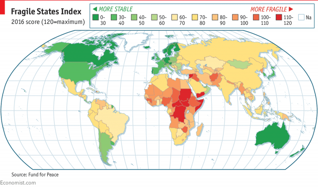
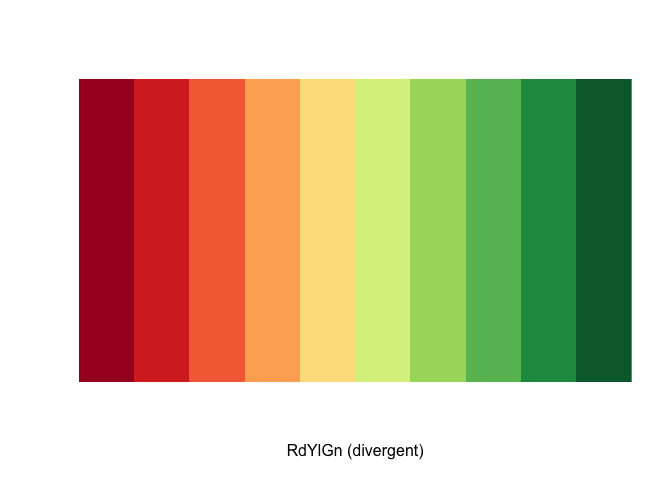
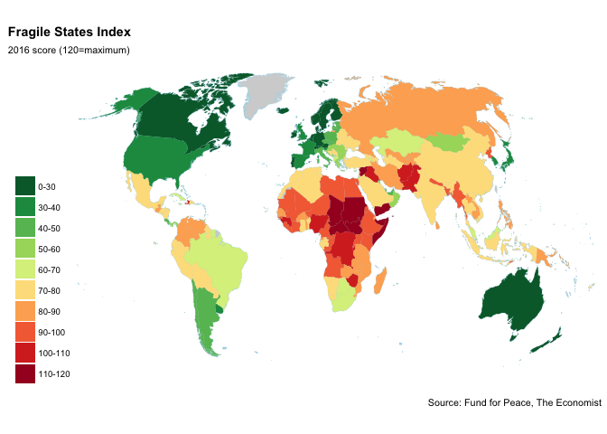
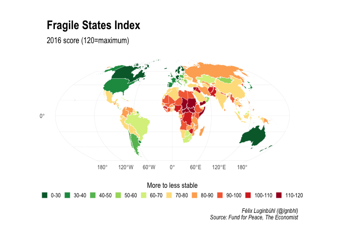

I am a big fan of The Economist charts, in particular the ones published in the Graphic details blog. According to their Christmas countdown, The Economist most popular map of 2017 were this map (see below). In this article, we will reproduce it with ggplot2, sf and leaflet.

In order to reproduce the map from Economist taken from their Christmas countdown, we will first download the Fragile States Index. The Fragile States Index from the Fund for Peace can be download freely here. Let’s download their data for 2016.
Show code
## # A tibble: 178 x 4
## Country Year Rank Total
## <chr> <dttm> <chr> <dbl>
## 1 Somalia 2016-01-01 00:00:00 1st 114.
## 2 South Sudan 2016-01-01 00:00:00 2nd 114.
## 3 Central African Republic 2016-01-01 00:00:00 3rd 112.
## 4 Sudan 2016-01-01 00:00:00 4th 112.
## 5 Yemen 2016-01-01 00:00:00 4th 112.
## 6 Syria 2016-01-01 00:00:00 6th 111.
## 7 Chad 2016-01-01 00:00:00 7th 110.
## 8 Congo Democratic Republic 2016-01-01 00:00:00 8th 110.
## 9 Afghanistan 2016-01-01 00:00:00 9th 108.
## 10 Haiti 2016-01-01 00:00:00 10th 105.
## # ... with 168 more rowsNo more code is needed as the data is already tidy.
A equivalent palette for the map can be found in the RColorBrewer package.

We need to break the countinuous variable Total into 10 discrete classes. And also check out if the countries have the same names.
Show code
breaks_map = c(0, 30, 40, 50, 60, 70, 80, 90, 100, 110, 120)
labels_map = c("0-30", "30-40", "40-50", "50-60", "60-70", "70-80", "80-90", "90-100", "100-110", "110-120")
index_2016$Classes <- cut(index_2016$Total,
breaks = breaks_map,
labels = labels_map)
world <- ggplot2::map_data("world") %>%
filter(region != "Antarctica")
dplyr::setdiff(index_2016$Country, world$region)## [1] "Congo Democratic Republic" "Guinea Bissau"
## [3] "Cote d'Ivoire" "Congo Republic"
## [5] "Kyrgyz Republic" "Israel and West Bank"
## [7] "Brunei Darussalam" "Trinidad and Tobago"
## [9] "Antigua and Barbuda" "Slovak Republic"
## [11] "United States" "United Kingdom"No, they aren’t. Twelve countries have to be renamed before reproducing the map.
Show code
index_2016 <- index_2016 %>%
mutate(Country = recode(Country,
"United States" = "USA",
"United Kingdom" = "UK",
"Slovak Republic" = "Slovakia",
"Israel and West Bank" = "Israel",
"Kyrgyz Republic" = "Kyrgyzstan",
"Congo Democratic Republic" = "Democratic Republic of the Congo",
"Congo Republic" = "Republic of Congo",
"Antigua and Barbuda" = "Antigua",
"Trinidad and Tobago" = "Trinidad",
"Guinea Bissau" = "Guinea-Bissau",
"Cote d'Ivoire" = "Ivory Coast",
"Brunei Darussalam" = "Brunei"))
library(ggthemes)
library(ggalt)
ggplot() +
geom_map(data = world, map = world,
aes(x = long, y = lat, map_id = region),
col = "lightblue", fill= "lightgrey", size = 0.1) +
geom_map(data = index_2016, map = world,
aes(map_id = Country, fill = Classes)) +
ggalt::coord_proj("+proj=wintri") + # for Winkel Trimple projection
scale_fill_brewer(NULL, palette = "RdYlGn", direction = -1) +
ggthemes::theme_map() +
#hrbrthemes::theme_ipsum() +
theme(plot.title = element_text(face = "bold")) +
labs(title = "Fragile States Index",
subtitle = "2016 score (120=maximum)",
caption = "Source: Fund for Peace, The Economist")
It doesn’t look that pretty to me. Let’s try again, using the geom_sf function of {ggplot2} (currently in the development version). To replace quicker the country names, we will use this time the {countrycode} package. We will also improve the legend.
Show code
#devtools::install_github("tidyverse/ggplot2")
library(rnaturalearth)
library(countrycode)
library(sf)
library(hrbrthemes)
earth <- ne_countries(scale = 50, returnclass = "sf") %>%
select(admin, geometry, iso_a2)
index_2016$iso2 <- countrycode(index_2016$Country, "country.name", "iso2c")
data_map <- inner_join(earth, index_2016, by = c("iso_a2" = "iso2")) %>%
select(Country, Total, Classes, geometry) %>%
sf::st_as_sf() # to coerce dataset to an sf object
library(hrbrthemes)
data_map %>%
ggplot() +
geom_sf(aes(fill = Classes), size = 0.1, color = "white") +
coord_sf(crs = "+proj=moll") + #Mollweide projection
scale_fill_brewer(NULL,
palette = "RdYlGn",
direction = -1,
guide = guide_legend(
title = "More to less stable",
title.hjust = 0.5,
direction = "horizontal",
nrow = 1,
keyheight = unit(3, units = "mm"),
keywidth = unit(3, units = "mm"),
label.position = "right",
title.position = "top")) +
theme_ipsum() +
theme(legend.direction = "horizontal",
legend.position = "bottom") +
labs(title = "Fragile States Index",
subtitle = "2016 score (120=maximum)",
caption = "Félix Luginbühl (@lgnbhl)\nSource: Fund for Peace, The Economist")
Much better!
The Economist map use the Winkel Trimple projection. Sadley, the geom_sf function of the current developing version of {ggplot2} still doesn’t have the Winkel projection available. So we used the Mollweide projection instead. If you really want to use the Winkel Trimple projection, you should do it in base R using the {sp} package.
With our sf data_map object, it is easy to make the map interactive with {leaflet}.
Show code
library(leaflet)
#set bin, color and labels
bins <- breaks_map
pal <- leaflet::colorBin("RdYlGn", domain = data_map$Total, bins = bins, reverse = TRUE)
labels <- sprintf("<strong>%s</strong><br/>%g Index score <sup></sup>",
data_map$Country, data_map$Total) %>%
lapply(htmltools::HTML)
leaflet_map <- data_map %>%
leaflet() %>% addTiles() %>%
addPolygons(
fillColor = ~pal(data_map$Total), fillOpacity = 0.7,
color = "white", weight = 1, opacity = 1,
highlight = highlightOptions(weight = 3),
label = labels,
labelOptions = labelOptions(
style = list("font-weight" = "normal"),
textsize = "15px", direction = "auto")) %>%
addLegend(
pal = pal, values = ~Classes, opacity = 0.9,
title = "Fragile Index", position = "bottomleft") %>%
addEasyButton(easyButton(icon = "fa-globe", title = "Zoom to World Level",
onClick=JS("function(btn, map){ map.setZoom(1);}"))){kind=link}